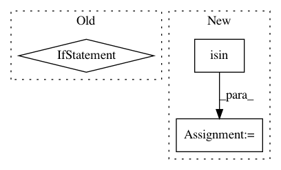

8bb827838c60d008d1cd5124b050021a3b7734dc,cnvlib/diagram.py,,create_diagram,#,29
Before Change
cnarr = cnarr.squash_genes()
for row in cnarr:
if row.start - 1 >= 0 and row.end <= chrom_sizes[row.chromosome]: // Sanity check
feat_name = row.gene if row.gene in gene_labels else None
features[row.chromosome].append(
(row.start - 1, row.end, strand, feat_name,
colors.Color(*plots.cvg2rgb(row.log2, not cnarr_is_seg))))
if do_both:
After Change
cnarr = cnarr.shift_xx(male_reference)
if cnarr_is_seg:
sel = cnarr.data[(cnarr.data.log2.abs() >= threshold) &
~cnarr.data.gene.isin(params.IGNORE_GENE_NAMES)]
gainloss = [(s.gene, s.chromosome, s.start, s.end, s.log2, s.probes)
for s in sel.itertuples(index=False)]
elif segarr:
segarr = segarr.shift_xx(male_reference)
gainloss = reports.gainloss_by_segment(cnarr, segarr, threshold)
In pattern: SUPERPATTERN
Frequency: 3
Non-data size: 3
Instances
Project Name: etal/cnvkit
Commit Name: 8bb827838c60d008d1cd5124b050021a3b7734dc
Time: 2016-04-06
Author: eric.talevich@gmail.com
File Name: cnvlib/diagram.py
Class Name:
Method Name: create_diagram
Project Name: IBM/AIF360
Commit Name: 240d23ec41ee51c72a69fda93148cb534a6688ec
Time: 2020-08-05
Author: hoffman.sc@gmail.com
File Name: aif360/algorithms/inprocessing/meta_fair_classifier.py
Class Name: MetaFairClassifier
Method Name: fit
Project Name: automl/auto-sklearn
Commit Name: b571351e4ff87845a78ba4c954e5f7d41bfba95e
Time: 2020-03-27
Author: feurerm@informatik.uni-freiburg.de
File Name: autosklearn/pipeline/implementations/MinorityCoalescer.py
Class Name: MinorityCoalescer
Method Name: transform